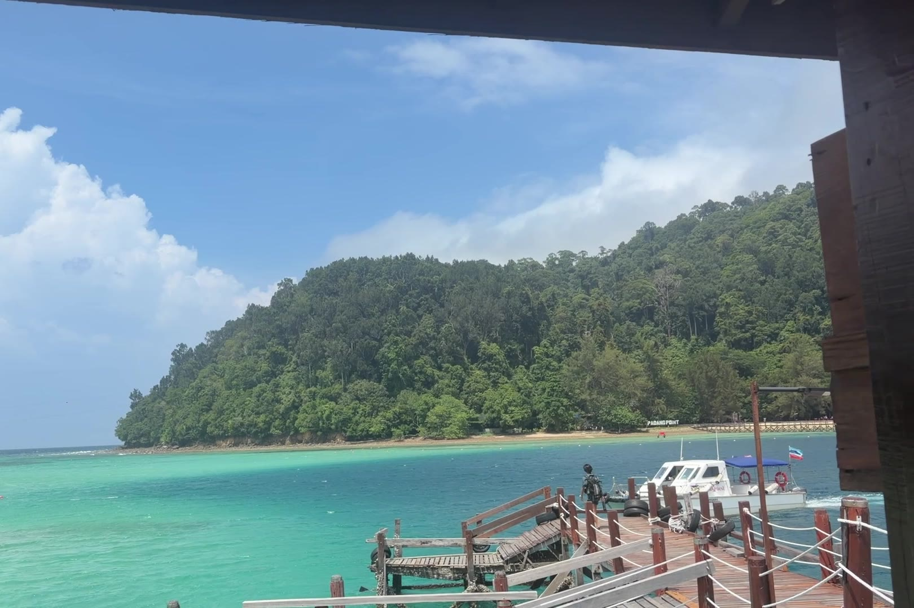
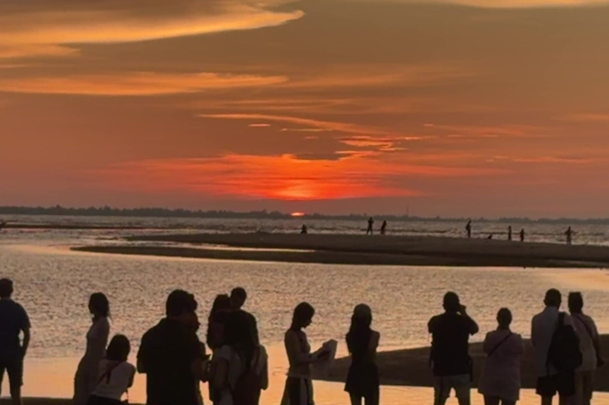
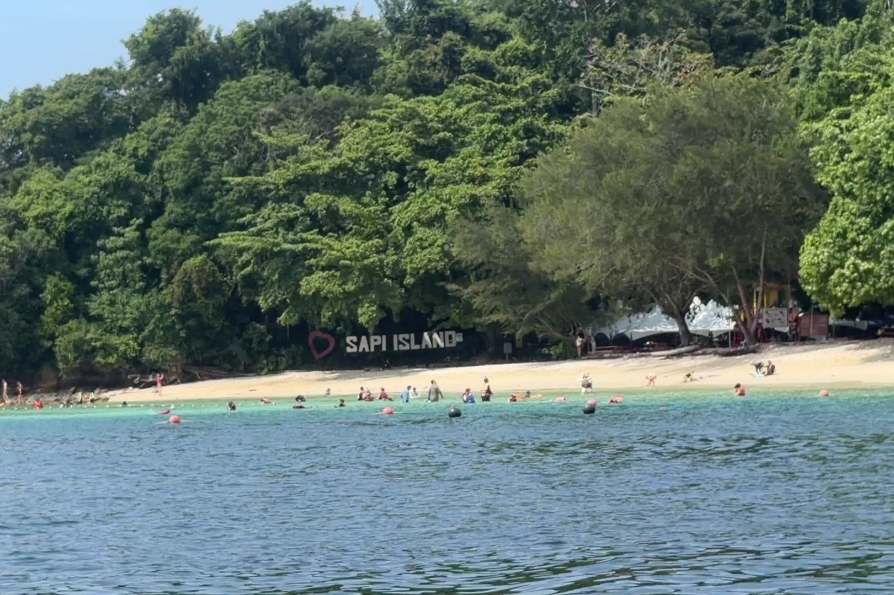

KOTA KINABALU

- 출발 후보일2027.02.25 (목) — 02.28 (일) · 날짜는 신청하신 분들과 조정해요
- 기간3박 4일
- 인원3–7명 · 3명 모이면 출발
섬에 내리면 왕도마뱀이 먼저 마중 나와요.
오전엔 바다, 저녁엔 맹그로브 위로 지는 해.
결제 아님 · 날짜 조정 가능 · 혼자 와도 돼요
WHY KOTA KINABALU왜 코타키나발루일까
지금의 코타키나발루는 영국 북보르네오 시절 '제셀턴'이라 불리던 항구 도시예요. 1905년에 세운 앳킨슨 시계탑은 시내에서 가장 오래된 건축물이고, 2차 세계대전 때 총탄에 시계판이 망가진 뒤 고쳐져 지금도 시간을 알려줘요.
시내에서 배로 금방인 섬들은 물빛이 그대로 보이는 바다예요. 오후엔 강을 따라 맹그로브 숲에 들어가고, 하루 끝은 바닷가 노을로 닫아요.
한국에서 직항으로 갈 수 있고 3박 4일이면 충분해서, 겨울에 짧게 따뜻한 곳에서 역사와 바다를 같이 보고 싶은 분께 맞아요.
FOR YOU이런 분께 맞아요
- 겨울에 3박 4일로 따뜻한 바다를 보고 싶은 분
- 휴양만 하긴 아쉽고, 도시 이야기도 같이 듣고 싶은 분
- 해산물 야시장과 노을을 좋아하는 분
YOU WILL SEE이 여행에서 만나는 것
- 사피섬 (툰쿠 압둘 라만 해양공원) 바다와 왕도마뱀
- 앳킨슨 시계탑 (1905, 옛 제셀턴의 흔적)
- 사바 주립 박물관
- 맹그로브 강 보트와 바닷가 노을
- 야시장 해산물 저녁

SAMPLE FLOW하루 흐름 예시
- 1일차도착, 바닷가 산책, 야시장 해산물
- 2일차배 타고 사피섬, 바다 수영·스노클링, 오후 휴식
- 3일차앳킨슨 시계탑·사바 주립 박물관, 오후 맹그로브 강 보트와 노을
- 4일차시내 카페·시장 산책, 귀국
일정은 예시예요. 인원·날씨·항공편에 따라 함께 조정해요.

JOIN THE NEXT TABLE코타키나발루, 같이 갈래요?
이름과 연락처만 남겨주세요. 3명이 모이면 일정과 예상 경비를 먼저 보내드려요.
FAQ자주 묻는 질문
혼자 신청해도 돼요?
네, 대부분 혼자 신청해요. 3명이 모이면 출발하는 소규모 여행이라 처음 만나도 금방 편해져요.
신청하면 결제해야 하나요?
아니요. 관심 신청은 결제나 예약 확정이 아니에요. 3명이 모이면 일정과 예상 경비를 먼저 안내드리고, 그때 정하시면 돼요.
날짜는 확정이에요?
지금 날짜는 출발 후보일이에요. 신청하신 분들 일정에 맞춰 조정할 수 있어요.
누가 같이 가요?
인생준준 세준이 함께 가요. 사학과를 나와 5년 동안 40번 넘게 해외를 다니며 역사 공부를 이어온 여행자예요. 유적 앞에서 같이 읽고, 같이 걷고, 같이 먹는 여행을 만들어요.